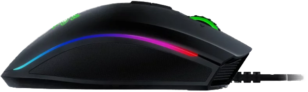

Ja Osobiście polecam Myszke Razer Mamba Elite.
Moim Zdanie jest to bardzo dobra myszka do grania w rózne gry i nie tylko, tutaj trochę o niej: zaawansowany sensor optyczny 5G o rzeczywistej rozdzielczości 16 000 DPI,9 programowalnych przycisków które można łatwo konfigurować w programie Razer Synapse 3 dadzą Ci dodatkową kontrolę, a wbudowana pamięć pozwoli Ci przechować do 5 profili,Ich działanie możesz dostosować przy użyciu gotowych efektów lub utworzyć własne przy wykorzystaniu 16,8 mln opcji kolorystycznych,Zaawansowany sensor optyczny Razer 5G o rzeczywistej czułości 16 000 DPI wprowadza nowy standard precyzji i szybkości. Dokładność rozdzielczości wynosi 99,4%, dlatego możesz zawsze celować precyzyjnie, nawet podczas intensywnej akcji,Razer Mamba Elite wyróżnia się zaawansowaną ergonomią z ulepszonymi uchwytami bocznymi zapewniającymi maksymalny komfort,Ta mysz umożliwia zmianę funkcji przycisków, przypisywanie makr oraz automatyczne zapisywanie wszystkich informacji profilowych w chmurze. Jeżeli planujesz używać komputera bez dostępu do Internetu lub bez zainstalowanego programu Razer Synapse 3, możesz zapisać we wbudowanej pamięci nawet 5 profili, aby użyć ich błyskawicznie, gdziekolwiek jesteś.

Specyfikacje:
• Typ myszy - Dla graczy
• Łączność - Przewodowa
• Sensor - Optyczny
• Rozdzielczość - 16000dpi
• Liczba przycisków - 9
• Rolka przewijania - 1
• Interfejs - USB
• Długość przewodu - 2,1 m
• Podświetlenie - Podświetlana obudowa,Podświetlana rolka,Podświetlane logo